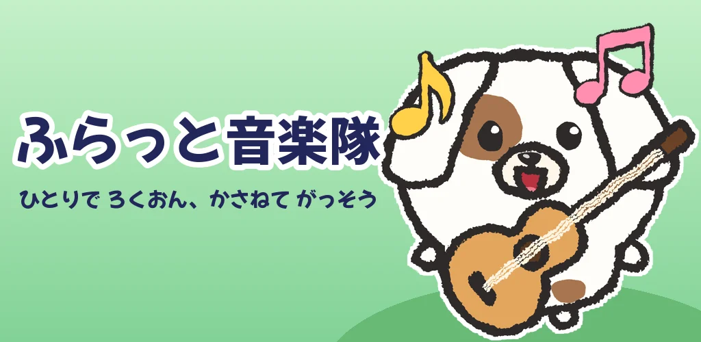
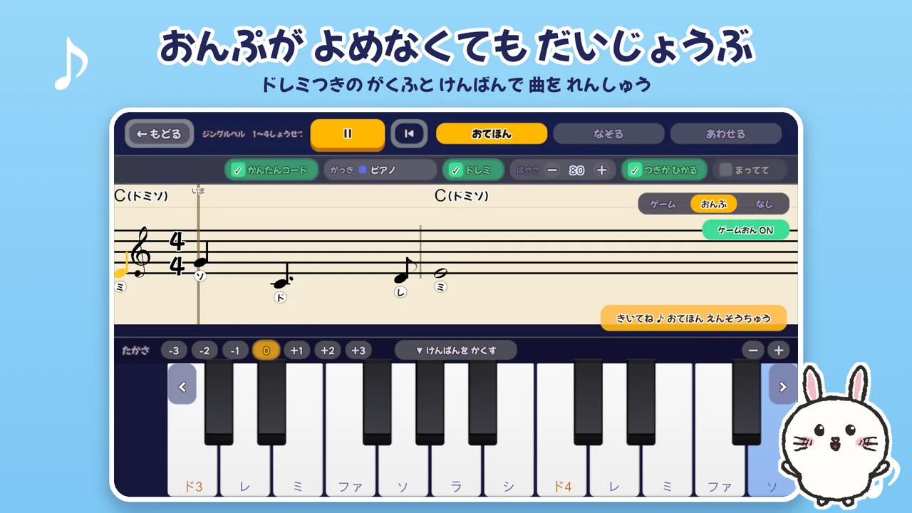
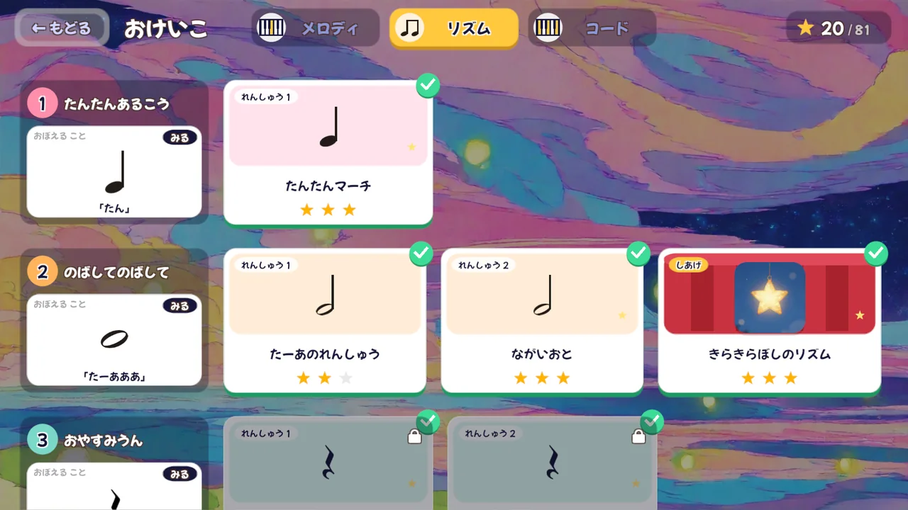
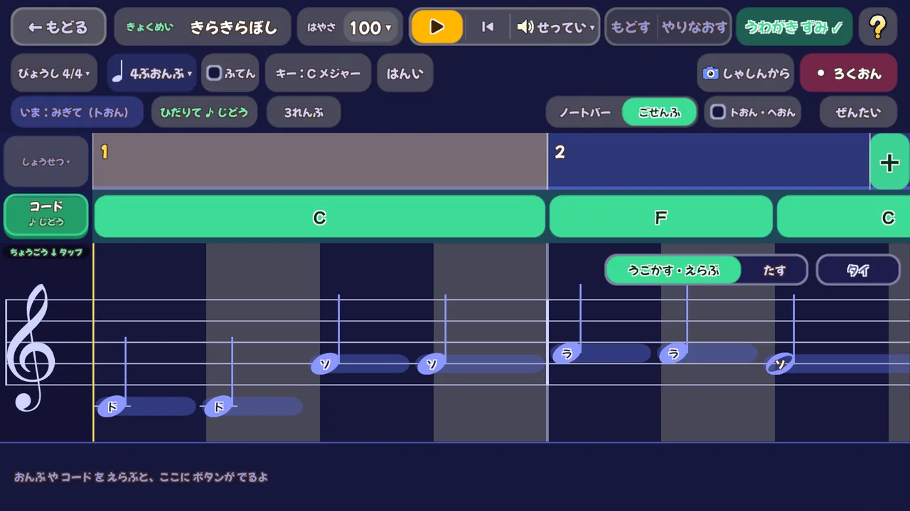
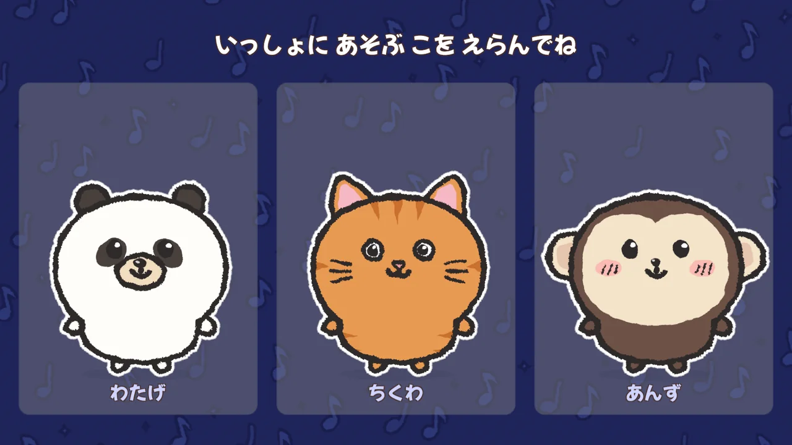
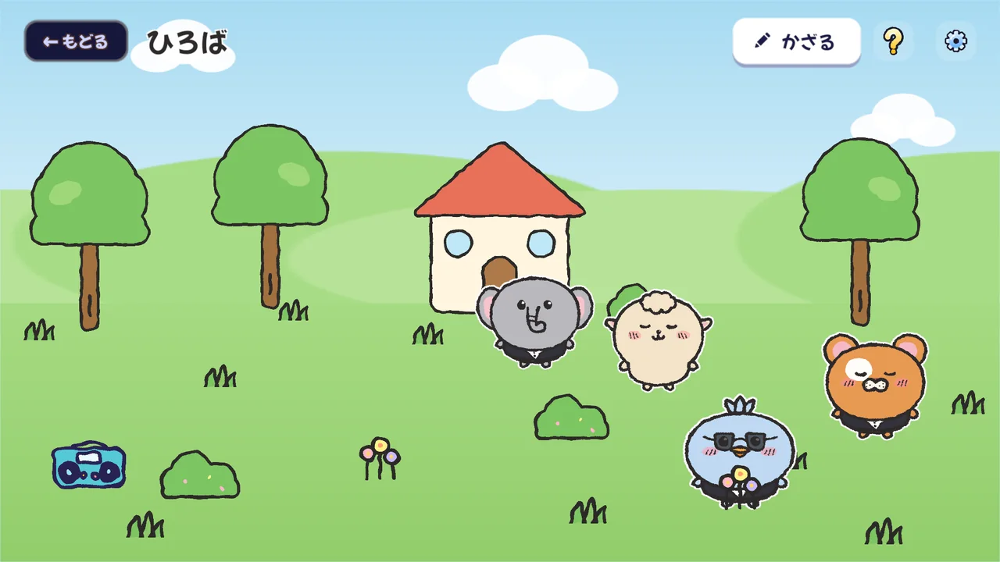

ふらっと音楽隊
ひとりで録音、重ねて合奏。
メロディ・コード・ベース・リズム・うた。パートを1つずつ録音して重ねていくと、自分だけのバンドの演奏ができあがります。ドレミつきの楽譜と光る鍵盤で、楽譜が読めなくても大丈夫。
Google Play で近日公開 Android 7.1 以上 ・ iOS 版は準備中
あそび
合奏・練習・おけいこ・作曲。好きなところから始められます。
がっそうひとりで合奏をつくろう
曲を選んで、パートごとに楽器を決めて録音。録ったパートは伴奏として流れるので、次のパートはそれに合わせて弾くだけです。ピアノ・木琴・リコーダー・ギター・ドラムなど50種類以上の楽器と、マイクで録る うたのパートがあります。
れんしゅう楽譜が読めなくても
音符にドレミの名前がつく楽譜と、次に弾く鍵盤が光る表示。好きな小節を選んで、お手本を聴く → なぞる → いっしょに弾く、の順で少しずつ練習できます。速さも変えられます。

おけいこやさしい順にステップアップ
1本の指で弾くコースから、両手で弾くコースへ。新しい音符やコードを1つずつ覚えながら、短い練習曲から仕上げの曲へ進みます。相棒のお手本をまねする「ききまね」で、耳と手をいっしょに育てます。

さっきょく自分だけの曲をつくろう
シートに音を並べるだけで作曲できます。コードは自動でつけることもできます。作った曲は合奏や練習でも使えます。

あいぼうなかよしの相棒といっしょ
いっしょに遊ぶ動物の「あいぼう」と出会えます。服や飾りを着せかえたり、自分のアバターをパーツを組み合わせて作ったりできます。

ひろばあいぼうたちの庭を飾ろう
あいぼうたちが暮らす「ひろば」に、木や家、楽器を置いて飾れます。押すと鳴る物や、ミニコンサートを開けるステージもあります。

収録曲と楽器
| 収録曲 | きらきらぼし、ジングルベル、ふるさと、トルコ行進曲、カノンなど、著作権の切れた童謡・唱歌・クラシック・世界の民謡を80曲 |
|---|---|
| 楽器 | 50種類以上。ねこ や いぬ の声など、おもしろい音もあります |
| 鍵盤 | 画面の鍵盤のほか、つないだ電子ピアノ・MIDI キーボードでも弾けます |
| 対象年齢のめやす | 6〜12歳 |
保護者の方へ
お子さまに安心して渡せるよう、次のことを約束しています。
- 広告なしアプリの中に広告は出ません。
- データの収集なし録音した声・作った曲・読み取りに使った写真は端末の中だけで扱い、外部へ送りません。
- 登録・ログイン不要アカウントを作らずに遊べます。
- 買い切り1回だけ無料で一部を遊べます。すべて遊ぶには1回だけの購入が必要で、購入の前に保護者の確認があります。
- コインはお金で買えないアプリの中のコインは遊んでもらえるもので、見た目のアイテムとだけ交換できます。
| 無料で遊べる | 一部の曲と楽器、おけいこ の「いっぽんゆび」のすべてと「りょうて」の最初の4レッスン、作った曲の保存2曲まで、合奏の保存3つまで |
|---|---|
| 購入すると | すべての曲・楽器・レッスンを遊べます (アプリ内課金・買い切り) |
サポート
よくある質問
機種変更や入れ直しのあと、購入した内容を戻すには？
購入したときと同じ Google アカウントでアプリを入れ、「せってい」の「アプリ」から「ぜんぶ あそべる ばんに する」を押し、保護者の確認のあとに「購入を復元する」を押してください。
作った曲や録音は、ほかの端末に移せますか？
作った曲・録音・あいぼう などは端末の中だけに保存しているため、いまはほかの端末へ移す機能はありません。アプリを削除すると消えてしまうのでご注意ください。
電子ピアノや MIDI キーボードはつなげますか？
USB でつないだ MIDI キーボード・電子ピアノで弾けます。端末によっては変換アダプターが必要です。
うたのパートでマイクを使うのはなぜですか？
うたのパートで歌声を録音するためです。録音した声は端末の中だけに保存され、外部へ送られることはありません。マイクを許可しなくても、うた以外のあそびはすべて使えます。
お問い合わせ
ご質問・不具合のご報告は、こちらのメールまでお寄せください。お使いの端末の機種名と、どの画面で何が起きたかを書いていただけると助かります。
furattoband.support@gmail.com